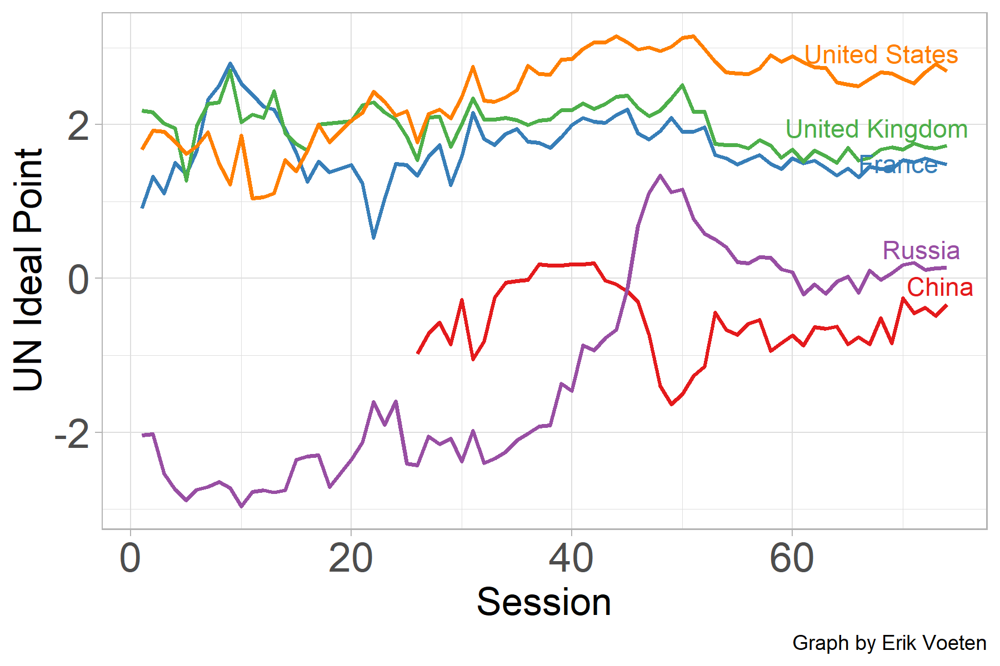
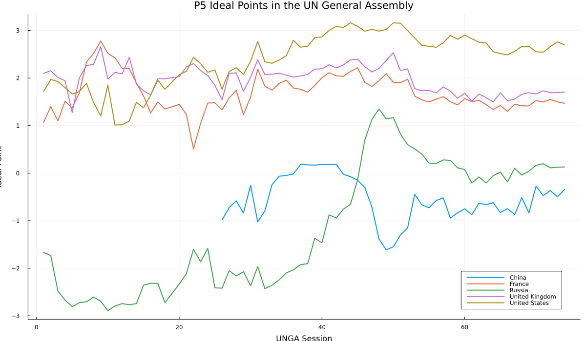
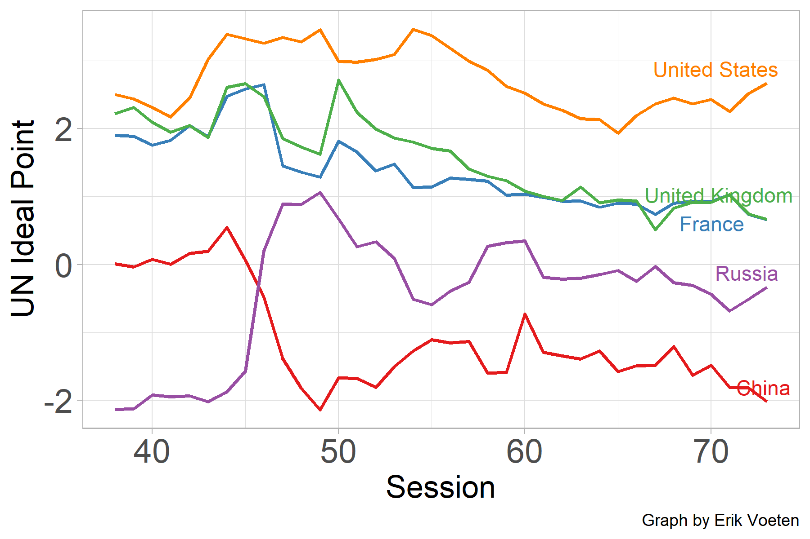
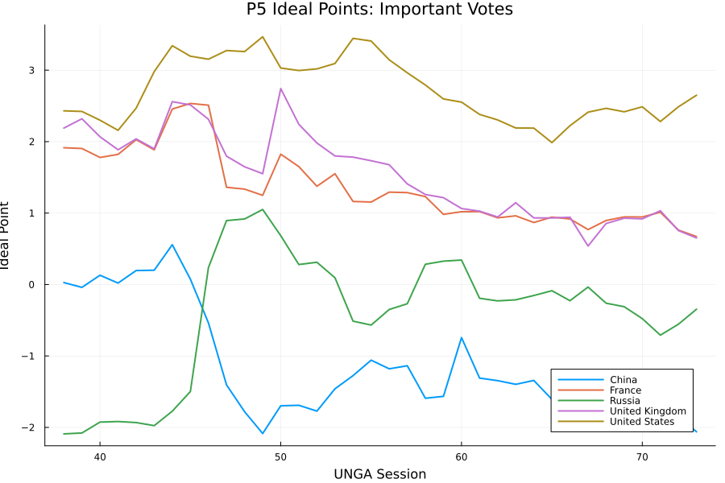

Replication of Bailey, Strezhnev, and Voeten (2017)
Estimating Dynamic State Preferences from United Nations Voting Data
This report was created as part of the assessment for the Computational Economics Course in the PhD program at Collegio Carlo Alberto taught by Florian Oswald.
Introduction
This project replicates the results of:
Bailey, M., Strezhnev, A., and Voeten, E. (2017),
Estimating Dynamic State Preferences from United Nations Voting Data.
The paper develops a Bayesian latent variable framework to estimate dynamic country ideal points using United Nations General Assembly voting records. Each country is assigned a latent ideological position that evolves over time and summarizes its location in the international political space.
The project reproduces the main estimation procedure of the original R/Rcpp replication package using Julia. In particular, the replication reconstructs the full Gibbs / Metropolis-Hastings estimation pipeline, generates dynamic ideal point estimates, and reproduces the main substantive figures presented in the original analysis.
In addition, the repository was reorganized into a modular replication package centered around a unified Julia API, improving portability, reproducibility, and computational transparency.
The implementation is based on the original replication materials provided by the authors:
https://github.com/evoeten/United-Nations-General-Assembly-Votes-and-Ideal-Points
The Julia replication package developed for this project is available at:
High Level Description of Computational Problem
The original paper estimates dynamic country ideal points from United Nations General Assembly voting data using a Bayesian latent variable model estimated via Markov Chain Monte Carlo (MCMC).
Each country-session receives a latent ideal point parameter representing the country’s position in the international political space. Votes are modeled using latent utilities together with vote-specific discrimination parameters and threshold parameters.
The estimation framework combines Gibbs sampling and Metropolis-Hastings updates to iteratively sample from the joint posterior distribution of the latent political positions and model parameters.
At the core of the model is the latent utility representation:
\[ U_{ijt} = \beta_j \theta_{it} - \gamma_j + \varepsilon_{ijt} \]
where:
- \(\theta_{it}\) denotes the latent ideal point of country \(i\) at time \(t\);
- \(\beta_j\) is the discrimination parameter for vote \(j\);
- \(\gamma_j\) is the vote threshold parameter;
- \(\varepsilon_{ijt}\) is an idiosyncratic error term.
Country ideal points evolve dynamically according to a lagged prior structure:
\[ \theta_{it} \sim \mathcal{N}(\theta_{i,t-1}, \sigma^2) \]
which induces temporal persistence in ideological positions across UNGA sessions.
From a computational perspective, the replication problem consists of:
- reconstructing the Bayesian estimation pipeline in Julia;
- implementing Gibbs and Metropolis-Hastings parameter updates;
- reproducing posterior sampling behavior of the original R/Rcpp implementation;
- storing and averaging posterior draws;
- generating dynamic ideal point trajectories;
- computing dyadic ideological distances.
The full estimation procedure is computationally intensive because the MCMC algorithm requires a large number of iterative posterior updates across countries, sessions, and votes.
Julia Implementation
The Julia implementation includes:
- theta update;
- dynamic lagged theta prior;
- gamma threshold Metropolis-Hastings update;
- latent Z update;
- beta update;
- MCMC loop with burn-in and thinning;
- posterior storage and averaging;
- ideal point export.
The full estimation logic is implemented in:
src/replication.jlwhile the scripts/ directory contains lightweight wrapper scripts calling the main replication API.
The repository was refactored into a unified replication package organized around a single master replication interface:
UNIdealPointsJulia.run_replication(; dataset, test)The Computational Setup
The project was developed and executed locally using Julia.
Main packages used:
- DataFrames.jl
- CSV.jl
- Distributions.jl
- StatsBase.jl
All dependencies are documented in the Project.toml and Manifest.toml files included in the repository.
The project requires:
- Julia;
- package environment activation via
Pkg.instantiate(); - intermediate processed data files already included in the repository under the
data/directory.
The intermediate data were generated from the original R/Rcpp replication package and are distributed together with this Julia replication package.
The full Bayesian MCMC replication is computationally intensive because the estimator performs a large number of iterative Gibbs / Metropolis-Hastings updates.
The full replication runs use:
- K = 20000 MCMC iterations;
- Burn = 4000;
- Thin = 50.
As a consequence, full estimation runs can require substantial execution time depending on hardware configuration.
For this reason, the repository also provides a lightweight smoke test using a substantially reduced number of MCMC iterations for portability and reproducibility verification before launching full replication runs.
Main Replication Outputs
Main outputs generated by the package include:
output/ThetaEst_full.csv
output/ThetaEst_full_all.csv
output/dyadic_distances_full_all.csvResults
Replicated P5 Figures
All-votes dataset
Original replication output

Julia replication

The Julia replication reproduces the main substantive dynamics of the original replication output, including the relative positioning of the United States, USSR/Russia, China, the United Kingdom, and France across UNGA sessions.
Important-votes dataset
Original replication output

Julia replication

The Julia replication based on the Important-votes subset reproduces the broad structure of the original replication output while reflecting differences due to MCMC sampling variation and implementation details.
Dyadic Ideological Distances
Dyadic ideological distances are computed as a post-estimation transformation:
\[ distance(i,j) = |\theta_i - \theta_j| \]
The dyadic distance output is stored in:
output/dyadic_distances_full_all.csvTesting and Reproducibility
The repository includes package unit tests, repository-relative paths using @__DIR__, and lightweight smoke-test replication runs for portability and reproducibility verification.
Package tests can be executed with:
using Pkg
Pkg.test()Conclusion
The Julia implementation successfully reproduces the main computational steps of the original R/Rcpp estimator and replicates the main substantive dynamics of the original paper.
The final repository structure follows a replication-package design centered around a reusable master replication interface and lightweight execution wrappers.
The project demonstrates how computational political economy workflows originally implemented in R/Rcpp can be fully replicated and modularized in Julia while preserving both estimation logic and substantive empirical results.